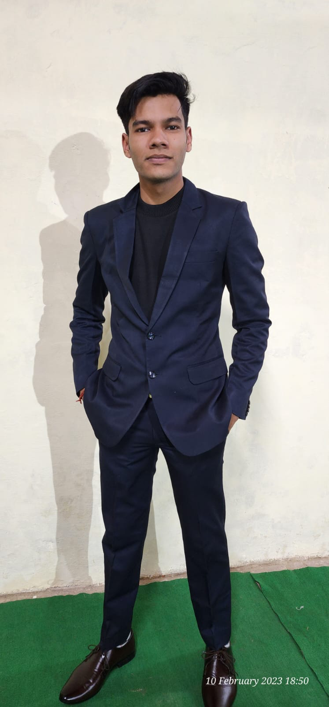

Hi my name is Raghav
I am a passionate
As a QA Engineer at Ensuredit, I focus on building reliable testing frameworks and automating test cases to improve software quality. While I have experience in SDET tasks and enjoy problem-solving, I'm still early in my career and eager to learn more. I love working with my team to tackle challenges and continuously improve our processes. I'm committed to growing my skills and contributing to the success of the projects I work on.

Work Expirence
Working as a QA Engineer since (2022 - present)
I started my IT career at Ensuredit as a QA Engineer, where I focus on ensuring high-quality
software through meticulous testing practices. I specialize in using Cypress for automation
and end-to-end (E2E) testing, streamlining testing processes and enhancing product
reliability. I've also gained experience as an SDET, integrating automated tests within the
CI/CD pipeline. Collaborating with development teams, I help identify issues early and
implement effective solutions, while continuously improving my skills.
Store Supervisor (2021 - 2022)
Managed day-to-day operations of the store, ensuring smooth and efficient workflow.
Supervised inventory control, ensuring accurate stock levels and timely replenishment of goods.
Coordinated with vendors and suppliers for procurement of materials, maintaining strong
relationships for consistent supply.
Oversaw staff scheduling, training, and performance, fostering a positive work environment and
ensuring high standards of customer service.
Implemented cost-control measures, reducing waste and optimizing resource utilization.
Education
Master of Computer Applications (MCA) | Chandigarh University | 2024 -
Present
Currently pursuing MCA through online learning, enhancing my skills in advanced computer science
and software development.
Engaging in coursework that covers a wide range of topics, including software engineering, data
structures, algorithms, and more.
Committed to continuous learning and applying new knowledge to real-world IT challenges.
Bachelor of Computer Applications (BCA) | SDSU University, Vidya Vikasini
Degree College(2021 - 2024)
Completed BCA with a CGPA of 6.07
Acquired foundational knowledge in computer science, software development, and IT applications
over 6 semesters.

Intermediate Education (2019 - 2020) Percentage - 63%/ 1st Div
I completed my Intermediate examination from Guru Nanak Inter College, Saharanpur, UP Board with
a focus on Physics, Chemistry, and Maths. I scored 316 out of 500.
High School Education (2017 - 2018) Precentage - 66% / 1st Div
I completed my High School Examination from S.A.M Inter College, Saharanpur, UP Board.